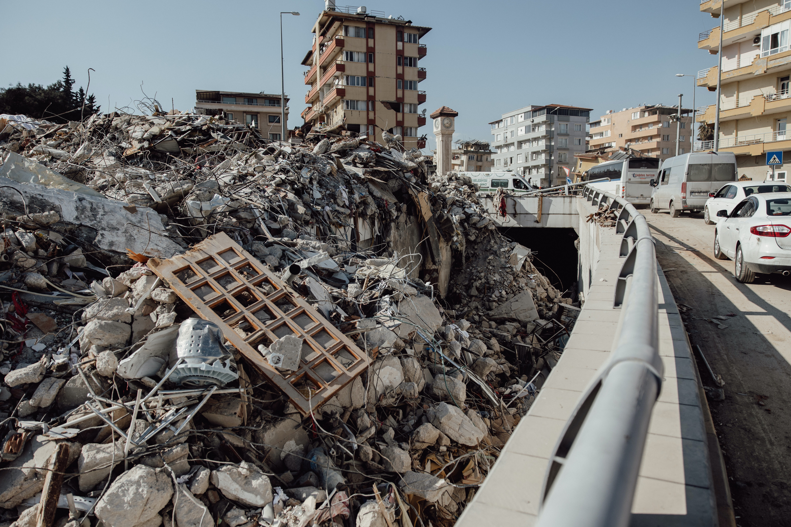

Northern, Western as well as Southern Pakistan, Kashmir and Northern India and Afghanistan are along zones of high seismic activity. Most of the earthquakes in Pakistan occur in the north and western regions, along the boundary of the Indian tectonic plate with the Iranian and Afghan micro-plates. As mentioned, the more intense seismic activity occurs near regions of thrust faulting which is developing at the Himalayan foothills in both Northern Pakistan and Northern India. In the last hundred years eight earthquakes with magnitude of more than 6 have been recorded in the Uttar Pradesh region of India. These quakes resulted by the gradual shifting of the India tectonic plate beneath the Tibetan plate in the geologically young Himalayan Mountain range and along the Himalayan arc.
The Chaman Thrust Fault system is a continuation on land of an extensive transform fault system in the Arabian Sea known as the Owen Fault Zone. The Chaman Fault System is a major fracture which begins in the Balochistan Province. The great Quetta earthquake (M7.7) of 31 May 1935 occurred along the Chaman Fault. The powerful earthquake devastated the town of Quetta and the adjoining region.
The Chaman Thrust Fault system extends along Pakistan's frontier with Afghanistan. It begins near Kalat, in the northern Makran range, passes near Quetta and continues in a north-northeastern direction to Kabul, Afghanistan - after branching off to form the Main Karakoram Thrust (MKT) System.
The Main Mantle Thrust (MMT) System parallels the Chatham Fault System on the east side of the Pishin Basin. Both the MKT and the MMT turn eastward in the Hazara-Kashmir syntaxial bend near the the Main Boundary Thrust (MBT), the region of major tectonic plate collision. The October 8, 2005 earthquake occurred near this active seismic zone in Northern Pakistan, in the Himalayan foothills. Its focal mechanism and slip and strike components are consistent with the compressive type of thrust faulting which is characteristic for the region and has resulted in folding and the formation of extensive anticlinal ridges in the vicinity of Muzaffarabad - Pakistani Kashmir's main city. Also, other major thrust zones exist along the Kirthar, Sulaiman and Salt mountain ranges of Pakistan.
The earthquake occurred in the Hazara-Kashmir syntaxial bend near the Main Mantle Thrust (MMT) the Main Karakoram Thrust (MKT) and the Main Boundary Thrust (MBT) (Modified base map of Pakistan Geological Survey- after Bakht, 2000) Most earthquakes in Pakistan occur in the north and western sections of the country along the boundary of the Indian tectonic plate with the Iranian and Afghan micro-plates. As indicated, numerous earthquakes occur along the Chaman Fault System.
Four major faults exist in and around Karachi and other parts of deltaic Indus, and the southern coast of Makran. The first of these is the Allah Bund Fault. It traverses Shahbundar, Jah, Pakistan Steel Mills, and continues to the eastern parts of Karachi - ending near Cape Monz. Earthquakes along this particular fault have been responsible for considerable destruction in the past. A major earthquake in the 13th century destroyed Bhanbhor. Another major earthquake in 1896, was responsible for extensive damage in Shahbundar. The second major fault near Karachi is an extension of the one that begins near Rann of the Kutch region. The third is the Pubb fault which ends into Arabian sea near the Makran coast. Finally, the fourth major fault near Karachi is located in the lower Dadu district, near Surajani. Many earthquakes have occurred on these faults.
Another major fault along the offshore Makran coast (Balochistan and Sindh Provinces), is the result of active subduction zone where major earthquakes have occurred in the past. This zone forms the boundary of the Arabian plate subducting under the Iranian micro-plate. However, the seismicity of the Makran region is relatively low compared to the neighboring regions, which have been devastated regularly by large earthquakes (Jacob and Quittmeyer, 1979). Although infrequent, large earthquakes do occur from time to time along the Makran coast. The great earthquake of 28 November 1945 is an example of the size earthquakes this fault can produce. It generated a destructive tsunami in the Northern Arabian Sea.
As the dust settled and the sun rose on the aftermath, Pakistan faced an unprecedented humanitarian crisis.
Thousands were left homeless and displaced, seeking refuge in makeshift camps set up by relief
organizations. Basic necessities such as food, water, and medical supplies were in acute shortage, prompting
an urgent call for international aid and support.
The global community responded swiftly, sending teams of rescuers, medical personnel, and humanitarian aid
to assist in the relief efforts. Nations from around the world extended a helping hand to their Pakistani
brethren, embodying the spirit of unity in times of distress.
However, logistical challenges posed significant obstacles in reaching remote and mountainous areas, where
survivors were cut off from the outside world. Landslides and damaged roads hampered rescue and relief
missions, requiring innovative solutions to overcome these barriers.
 Despite the difficulties, acts of heroism and selflessness were witnessed as ordinary citizens and
international volunteers worked hand in hand to provide assistance. The spirit of solidarity and resilience
was evident as survivors came together to rebuild their lives amidst the rubble.
In the weeks and months that followed, Pakistan embarked on a long and arduous journey of reconstruction and
rehabilitation.
Despite the difficulties, acts of heroism and selflessness were witnessed as ordinary citizens and
international volunteers worked hand in hand to provide assistance. The spirit of solidarity and resilience
was evident as survivors came together to rebuild their lives amidst the rubble.
In the weeks and months that followed, Pakistan embarked on a long and arduous journey of reconstruction and
rehabilitation.
The earthquake of October 5, 2005, spurred the government and communities to prioritize disaster preparedness and invest in resilient infrastructure to withstand future calamities. Years have passed since that dreadful day, but the memories of the earthquake remain etched in the hearts of the people. The resilience and strength exhibited by the Pakistani nation in the face of such immense adversity serve as a testament to the human spirit's ability to endure and rebuild. The earthquake of October 5, 2005, stands as a somber reminder of the unpredictable power of nature and the need for collective efforts to mitigate its impact. Pakistan, along with the international community, continues to learn from this tragedy and strives to build a safer, more prepared future for all its citizens. As time marches on, let us remember and honor the lives lost, and let their memory be a beacon guiding us towards a more compassionate and resilient world.